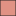
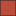

<!doctype html>
<html lang="en">
    <head>
        <meta charset="utf-8">
        <meta http-equiv="X-UA-Compatible" content="IE=edge">
        <meta name="viewport" content="initial-scale=1,user-scalable=no,maximum-scale=1,width=device-width">
        <meta name="mobile-web-app-capable" content="yes">
        <meta name="apple-mobile-web-app-capable" content="yes">
        <link rel="stylesheet" href="css/leaflet.css"><link rel="stylesheet" href="css/L.Control.Locate.min.css">
        <link rel="stylesheet" href="css/qgis2web.css"><link rel="stylesheet" href="css/fontawesome-all.min.css">
        <link rel="stylesheet" href="css/leaflet-control-geocoder.Geocoder.css">
        <link rel="stylesheet" href="css/leaflet-measure.css">
        <style>
        html, body, #map {
            width: 100%;
            height: 100%;
            padding: 0;
            margin: 0;
        }
        </style>
        <title></title>
    </head>
    <body>
        <div id="map">
        </div>
        <script src="js/qgis2web_expressions.js"></script>
        <script src="js/leaflet.js"></script><script src="js/L.Control.Locate.min.js"></script>
        <script src="js/leaflet.rotatedMarker.js"></script>
        <script src="js/leaflet.pattern.js"></script>
        <script src="js/leaflet-hash.js"></script>
        <script src="js/Autolinker.min.js"></script>
        <script src="js/rbush.min.js"></script>
        <script src="js/labelgun.min.js"></script>
        <script src="js/labels.js"></script>
        <script src="js/leaflet-control-geocoder.Geocoder.js"></script>
        <script src="js/leaflet-measure.js"></script>
        <script src="data/Coefficientdegravilus_0.js"></script>
        <script>
        var highlightLayer;
        function highlightFeature(e) {
            highlightLayer = e.target;

            if (e.target.feature.geometry.type === 'LineString') {
              highlightLayer.setStyle({
                color: '#ffff00',
              });
            } else {
              highlightLayer.setStyle({
                fillColor: '#ffff00',
                fillOpacity: 1
              });
            }
            highlightLayer.openPopup();
        }
        var map = L.map('map', {
            zoomControl:true, maxZoom:28, minZoom:1
        }).fitBounds([[1.286523459920013,3.2984093066611457],[13.28290321088722,27.69179002476886]]);
        var hash = new L.Hash(map);
        map.attributionControl.setPrefix('<a href="https://github.com/tomchadwin/qgis2web" target="_blank">qgis2web</a> &middot; <a href="https://leafletjs.com" title="A JS library for interactive maps">Leaflet</a> &middot; <a href="https://qgis.org">QGIS</a>');
        var autolinker = new Autolinker({truncate: {length: 30, location: 'smart'}});
        L.control.locate({locateOptions: {maxZoom: 19}}).addTo(map);
        var measureControl = new L.Control.Measure({
            position: 'topleft',
            primaryLengthUnit: 'meters',
            secondaryLengthUnit: 'kilometers',
            primaryAreaUnit: 'sqmeters',
            secondaryAreaUnit: 'hectares'
        });
        measureControl.addTo(map);
        document.getElementsByClassName('leaflet-control-measure-toggle')[0]
        .innerHTML = '';
        document.getElementsByClassName('leaflet-control-measure-toggle')[0]
        .className += ' fas fa-ruler';
        var bounds_group = new L.featureGroup([]);
        function setBounds() {
        }
        function pop_Coefficientdegravilus_0(feature, layer) {
            layer.on({
                mouseout: function(e) {
                    for (i in e.target._eventParents) {
                        e.target._eventParents[i].resetStyle(e.target);
                    }
                    if (typeof layer.closePopup == 'function') {
                        layer.closePopup();
                    } else {
                        layer.eachLayer(function(feature){
                            feature.closePopup()
                        });
                    }
                },
                mouseover: highlightFeature,
            });
            var popupContent = '<table>\
                    <tr>\
                        <td colspan="2">' + (feature.properties['NAME_2'] !== null ? autolinker.link(feature.properties['NAME_2'].toLocaleString()) : '') + '</td>\
                    </tr>\
                    <tr>\
                        <th scope="row">Nom de commune </th>\
                        <td>' + (feature.properties['NAME_3'] !== null ? autolinker.link(feature.properties['NAME_3'].toLocaleString()) : '') + '</td>\
                    </tr>\
                    <tr>\
                        <th scope="row">Surface</th>\
                        <td>' + (feature.properties['area'] !== null ? autolinker.link(feature.properties['area'].toLocaleString()) : '') + '</td>\
                    </tr>\
                    <tr>\
                        <th scope="row">Périmètre</th>\
                        <td>' + (feature.properties['perimeter'] !== null ? autolinker.link(feature.properties['perimeter'].toLocaleString()) : '') + '</td>\
                    </tr>\
                    <tr>\
                        <th scope="row">Forme de la commune</th>\
                        <td>' + (feature.properties['forme_comm'] !== null ? autolinker.link(feature.properties['forme_comm'].toLocaleString()) : '') + '</td>\
                    </tr>\
                </table>';
            layer.bindPopup(popupContent, {maxHeight: 400});
        }

        function style_Coefficientdegravilus_0_0(feature) {
            switch(String(feature.properties['forme_comm'])) {
                case 'allongée':
                    return {
                pane: 'pane_Coefficientdegravilus_0',
                opacity: 1,
                color: 'rgba(35,35,35,1.0)',
                dashArray: '',
                lineCap: 'butt',
                lineJoin: 'miter',
                weight: 1.0, 
                fill: true,
                fillOpacity: 1,
                fillColor: 'rgba(224,146,132,1.0)',
                interactive: true,
            }
                    break;
                case 'compacte':
                    return {
                pane: 'pane_Coefficientdegravilus_0',
                opacity: 1,
                color: 'rgba(35,35,35,1.0)',
                dashArray: '',
                lineCap: 'butt',
                lineJoin: 'miter',
                weight: 1.0, 
                fill: true,
                fillOpacity: 1,
                fillColor: 'rgba(225,224,224,1.0)',
                interactive: true,
            }
                    break;
                case 'exceptionnellement allongée':
                    return {
                pane: 'pane_Coefficientdegravilus_0',
                opacity: 1,
                color: 'rgba(35,35,35,1.0)',
                dashArray: '',
                lineCap: 'butt',
                lineJoin: 'miter',
                weight: 1.0, 
                fill: true,
                fillOpacity: 1,
                fillColor: 'rgba(143,10,10,1.0)',
                interactive: true,
            }
                    break;
                case 'tres allongée':
                    return {
                pane: 'pane_Coefficientdegravilus_0',
                opacity: 1,
                color: 'rgba(35,35,35,1.0)',
                dashArray: '',
                lineCap: 'butt',
                lineJoin: 'miter',
                weight: 1.0, 
                fill: true,
                fillOpacity: 1,
                fillColor: 'rgba(186,78,61,1.0)',
                interactive: true,
            }
                    break;
            }
        }
        map.createPane('pane_Coefficientdegravilus_0');
        map.getPane('pane_Coefficientdegravilus_0').style.zIndex = 400;
        map.getPane('pane_Coefficientdegravilus_0').style['mix-blend-mode'] = 'normal';
        var layer_Coefficientdegravilus_0 = new L.geoJson(json_Coefficientdegravilus_0, {
            attribution: '',
            interactive: true,
            dataVar: 'json_Coefficientdegravilus_0',
            layerName: 'layer_Coefficientdegravilus_0',
            pane: 'pane_Coefficientdegravilus_0',
            onEachFeature: pop_Coefficientdegravilus_0,
            style: style_Coefficientdegravilus_0_0,
        });
        bounds_group.addLayer(layer_Coefficientdegravilus_0);
        map.addLayer(layer_Coefficientdegravilus_0);
        map.createPane('pane_GoogleHybrid_1');
        map.getPane('pane_GoogleHybrid_1').style.zIndex = 401;
        var layer_GoogleHybrid_1 = L.tileLayer('https://mt1.google.com/vt/lyrs=y&x={x}&y={y}&z={z}', {
            pane: 'pane_GoogleHybrid_1',
            opacity: 0.273,
            attribution: '<a href="https://www.google.at/permissions/geoguidelines/attr-guide.html">Map data ©2015 Google</a>',
            minZoom: 1,
            maxZoom: 28,
            minNativeZoom: 0,
            maxNativeZoom: 20
        });
        layer_GoogleHybrid_1;
        map.addLayer(layer_GoogleHybrid_1);
        map.createPane('pane_ESRISatellite_2');
        map.getPane('pane_ESRISatellite_2').style.zIndex = 402;
        var layer_ESRISatellite_2 = L.tileLayer('https://server.arcgisonline.com/ArcGIS/rest/services/World_Imagery/MapServer/tile/{z}/{y}/{x}', {
            pane: 'pane_ESRISatellite_2',
            opacity: 0.47100000000000003,
            attribution: '',
            minZoom: 1,
            maxZoom: 28,
            minNativeZoom: 0,
            maxNativeZoom: 20
        });
        layer_ESRISatellite_2;
        map.addLayer(layer_ESRISatellite_2);
        var osmGeocoder = new L.Control.Geocoder({
            collapsed: true,
            position: 'topleft',
            text: 'Search',
            title: 'Testing'
        }).addTo(map);
        document.getElementsByClassName('leaflet-control-geocoder-icon')[0]
        .className += ' fa fa-search';
        document.getElementsByClassName('leaflet-control-geocoder-icon')[0]
        .title += 'Search for a place';
        var baseMaps = {};
        L.control.layers(baseMaps,{"ESRI Satellite": layer_ESRISatellite_2,"Google Hybrid": layer_GoogleHybrid_1,'Coefficient de gravilus<br /><table><tr><td style="text-align: center;"></td><td>Allongée</td></tr><tr><td style="text-align: center;"></td><td>Compacte</td></tr><tr><td style="text-align: center;"></td><td>Exceptionnellement allongée</td></tr><tr><td style="text-align: center;"></td><td>Très Allongée</td></tr></table>': layer_Coefficientdegravilus_0,},{collapsed:false}).addTo(map);
        map.on("zoomend", function(){

                if (map.hasLayer(layer_Coefficientdegravilus_0)) {
                    if (map.getZoom() <= 5 && map.getZoom() >= 19) {
                        layer_Coefficientdegravilus_0.eachLayer(function (layer) {
                            layer.openTooltip();
                        });
                    } else {
                        layer_Coefficientdegravilus_0.eachLayer(function (layer) {
                            layer.closeTooltip();
                        });
                    }
                }
        });
        setBounds();
        var i = 0;
        layer_Coefficientdegravilus_0.eachLayer(function(layer) {
            var context = {
                feature: layer.feature,
                variables: {}
            };
            layer.bindTooltip((layer.feature.properties['NAME_2'] !== null?String('<div style="color: #412e18; font-size: 6pt; font-family: \'MS Shell Dlg 2\', sans-serif;">' + layer.feature.properties['NAME_2']) + '</div>':''), {permanent: true, offset: [-0, -16], className: 'css_Coefficientdegravilus_0'});
            labels.push(layer);
            totalMarkers += 1;
              layer.added = true;
              addLabel(layer, i);
              i++;
        });
                if (map.hasLayer(layer_Coefficientdegravilus_0)) {
                    if (map.getZoom() <= 5 && map.getZoom() >= 19) {
                        layer_Coefficientdegravilus_0.eachLayer(function (layer) {
                            layer.openTooltip();
                        });
                    } else {
                        layer_Coefficientdegravilus_0.eachLayer(function (layer) {
                            layer.closeTooltip();
                        });
                    }
                }
        resetLabels([layer_Coefficientdegravilus_0]);
        map.on("zoomend", function(){
            resetLabels([layer_Coefficientdegravilus_0]);
        });
        map.on("layeradd", function(){
            resetLabels([layer_Coefficientdegravilus_0]);
        });
        map.on("layerremove", function(){
            resetLabels([layer_Coefficientdegravilus_0]);
        });
        </script>
    </body>
</html>
